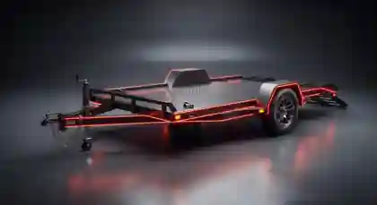
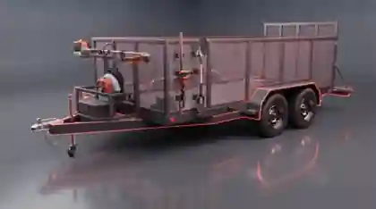

LA MAYORÍA DE MARCAS Y MODELOS · HASTA 10,000 LB
Reparación y mantenimiento de remolques en Phoenixville, PA
Atendemos la mayoría de marcas y modelos de remolques que pesen 10,000 libras (4,536 kg) o menos. Cuéntenos sobre su remolque y el problema para confirmar el trabajo.

Su remolque trabaja duro. Manténgalo listo.
Desde remolques utilitarios hasta los de carga cerrados y recreativos, una avería puede interrumpir su trabajo o viaje. Describa el problema para que podamos evaluar el siguiente paso.
La reparación del remolque es distinta del mantenimiento de camiones y furgonetas. Consulte nuestro servicio de flotas.
Problemas comunes de remolques
- Frenos y problemas de frenado
- Rodamientos de ruedas y cubos
- Ejes y suspensión
- Luces y cableado de remolques
- Neumáticos y ruedas
- Acoples y conexiones de remolque
Estos son problemas comunes sobre los que puede consultar. Confirmamos cada reparación antes de aceptar el trabajo.
Tipos de remolques populares

Explore tipos de remolques
Busque o filtre 54 tipos comunes. Una categoría no significa que hagamos todas las reparaciones especializadas.
- Remolques utilitarios
- Remolques utilitarios de un eje
- Remolques utilitarios de dos ejes
- Remolques de carga abiertos
- Remolques de carga cerrados
- Remolques tipo caja
- Remolques de plataforma
- Remolques de plataforma sobre ruedas
- Remolques de plataforma inclinable
- Remolques de jardinería
- Remolques de jardinería cerrados
- Remolques para cortacéspedes
- Remolques para maquinaria
- Remolques para minicargadoras
- Remolques para miniexcavadoras
- Remolques para tractores compactos
- Remolques basculantes
- Remolques para materiales de construcción
- Remolques de herramientas para contratistas
- Remolques abiertos para autos
- Remolques cerrados para autos
- Remolques para autos clásicos
- Remolques para autos de carrera
- Remolques para motocicletas
- Remolques para vehículos todoterreno ATV
- Remolques para vehículos UTV
- Remolques para carritos de golf
- Remolques para motos de nieve
- Plataformas de remolque de dos ruedas
- Remolques para barcos
- Remolques para pontones
- Remolques para veleros
- Remolques para motos acuáticas
- Remolques para kayaks
- Remolques para canoas
- Remolques camper plegables
- Remolques camper tipo lágrima
- Remolques de viaje ligeros
- Remolques para caballos
- Remolques para ganado
- Remolques utilitarios agrícolas
- Remolques para heno
- Remolques para equipos agrícolas pequeños
- Remolques pequeños para alimento animal
- Remolques de comida
- Remolques de venta móvil
- Remolques de taller móvil
- Remolques para generadores
- Remolques para compresores de aire
- Remolques para lavado a presión
- Remolques con baños portátiles
- Remolques para eventos y exhibiciones
- Remolques de oficina móvil
- Remolques para bobinas de cable
¿No aparece? Consúltenos. El peso del remolque debe ser de 10,000 lb (4,536 kg) o menos. No se han confirmado servicios de equipos de comida, aparatos de RV o maquinaria hidráulica.
Inspecciones de seguridad de remolques en Pennsylvania
Diverse Autoworks ofrece inspecciones de seguridad de remolques. Los requisitos varían según clasificación y peso. Consúltenos para confirmar el servicio y concertar una visita.
Cómo funciona el servicio
- Indíquenos tipo, marca, modelo y peso.
- Describa el problema y comparta fotos si ayudan.
- Confirmamos si podemos hacer el trabajo.
- Nuestro personal confirma disponibilidad. Las solicitudes no son citas.
Si no es seguro remolcarlo, no lo conduzca hasta el taller.
Preguntas frecuentes
¿Qué marcas y modelos de remolques atienden?
La mayoría de marcas y modelos que pesen 10,000 libras o menos. Consulte para confirmar el servicio.
¿El límite de 10,000 libras se aplica a mi camioneta?
No. El límite se refiere al peso del remolque, no al vehículo que lo remolca. Indique también la clasificación de peso del fabricante.
¿Reparan remolques de carga cerrados?
Indique marca, modelo, peso y el problema. Confirmaremos qué podemos reparar.
¿Atienden remolques de jardinería o maquinaria?
Aceptamos consultas sobre estos tipos dentro del límite de peso. Confirmamos las reparaciones al revisar los detalles.
¿Atienden remolques para barcos o campers?
Consúltenos sobre los componentes rodantes. No se han confirmado reparaciones de barcos, aparatos de RV o áreas habitables.
¿Hacen inspecciones estatales de remolques en Pennsylvania?
Los remolques figuran entre nuestros servicios de inspección estatal. Llame con la clasificación y el peso para confirmar disponibilidad.
¿Una solicitud en línea confirma una cita?
No. Nuestro personal revisará la solicitud y se comunicará para confirmar disponibilidad.
Solicitar servicio de remolque
1415 Pawlings Road, Phoenixville, PA 19460 · Lunes a viernes, 7:30 AM–4:30 PM
Indique el peso, la marca, el modelo y el problema. Enviar la solicitud no confirma una cita.